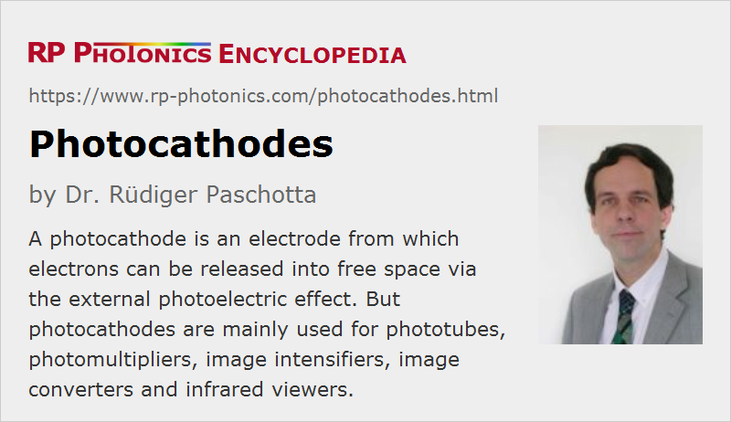

Photocathodes
Definition: an electrode where electrons can be released based on the photoelectric effect
German: Photokathoden
Categories: photonic devices, light detection and characterization, optoelectronics
How to cite the article; suggest additional literature
Author: Dr. Rüdiger Paschotta
A photocathode is an electrode made from a photoemissive material from which electrons can be released into free space via the external photoelectric effect. Using another electrode, called the anode, which is held at a substantially more positive electric potential, one can pull the photoelectrons away from the photocathode and obtain a photocurrent, which is proportional to the incident optical power over a wide dynamic range.
This effect is what is essentially used in a phototube. Photocathodes are also used in other kind of photodetector devices, namely in photomultipliers, and also in infrared viewers, streak cameras, image intensifiers (image amplifiers) and image converters. Besides, pulsed photocathodes, which are illuminated with ultrashort laser pulses, are used in some particle accelerators.
Photocathodes must generally be operated in a high vacuum – typically within an evacuated glass tube. The spectral sensitivity can then be limited by the transparency of the used optical window material. For example, ultraviolet detectors may be equipped with a magnesium fluoride optical window, which is transparent for light with wavelengths above 115 nm. Others work with UV glasses with a short wavelength cut-off around 185 nm, for example, or with borosilicate glasses for transmission from 0.3 μm on.
Reflection-mode and Transmission-mode Photocathodes
Thick photocathodes, e.g. consisting of an opaque metal plate, can emit electrons only on the illuminated side. They are called reflective or reflection-mode cathodes, although they of course work with absorbed rather than with reflected light. Their reflectivity should not be high in the wavelength region of interest.
Various devices contain very thin photocathodes, where photoelectrons can be extracted on the opposite side. Such transmission-mode photocathodes are needed for image intensifiers, for example, where electrodes strongly limit the access of light on their side, and also for head-on photomultipliers. Since electrons cannot travel over substantial distances in a material without strongly interacting with it, transmission-type photocathodes require that light can propagates through them – while at the same time there must be substantial absorption, since unabsorbed light can of course not produce any photoelectrons. Therefore, transmission-type photocathodes need to be very thin, e.g. made as a thin film deposited on the inner side of a glass tube. Their quantum efficiency is typically somewhat lower than that of reflective photocathodes.
The sensitivity at the long-wavelength edge can be substantially reduced when using thin films, exhibiting only a limited amount of absorption in that spectral region.
Work Function, Spectral Range and Quantum Efficiency
Normally, electron emission is possible only when the photon energy exceeds the work function of the material, which is the amount of energy required for releasing an electron into free space. The work function of the material thus determines the maximum possible optical wavelength for which the external photoelectric effect can occur. Only at very high optical intensities, nonlinear processes are possible where multiple photons combine their energy to excite a single electron.
Many photoemissive materials have a work function which allows the operation with visible and ultraviolet, but not with infrared light. Others have a large work function and are suitable only for short wavelengths in the ultraviolet, e.g. below 200 nm. Semiconductor materials with low band gap energy are used for infrared detection.
The photoelectric effect usually works well for higher photon energies, well above the work function. The short-wavelength edge of the spectral range is often not limited by the photocathode, but by the transmission of the optical window. Sometimes, the spectral range is intentionally reduced by using some kind of optical filter. For example, infrared detectors are often made insensitive to visible and ultraviolet light.
Not every incident photon can generate a photoelectrons, since some of the photons may be reflected or (for a thin cathode) transmitted or scattered away instead of being absorbed, and not even every absorbed photon may provide a photoelectron. The average number of photoelectrons per incident photon, or the probability of one photon to generate a photoelectron, is called the quantum efficiency of the photocathode. Typically, it drops sharply when the optical wavelength approaches the maximum possible one, defined by the work function. Some photocathode materials (see below) reach quantum efficiencies of more than 30% in some spectral region, while others (particularly those for the infrared) are limited to the order of 10% or even substantially lower.
The quantum efficiency of a photocathode also depends on the applied electric field, particularly in the range of small field strengths.
Resistance
Photocathodes made as thin semiconductor films can have a substantial electrical resistance. That limits their ability to deliver high photocurrents, i.e., to operate with high input light levels. The available dynamic range is then decreased accordingly.
Note that the resistance can be substantially increased for low-temperature operation, as required for low-noise detection.
Dark Current from Thermionic Emission
Photocathodes can exhibit some amount of dark current, which results from thermionic emission: electrons can receive sufficient energy from formal processes, so that they can leave the material without any incident light. This detrimental process is particularly relevant for applications like photon counting, where the false dark count rate is a seriously limiting performance parameter.
Thermionic emission is often very weak at room temperature, unless for materials with small work function, as required for infrared detection. In such cases, a photocathode may need to be cooled in order to reduce the dark current.
Note that the temperature also somewhats effects the photocurrent. Photocathodes usually have a negative temperature coefficient (i.e., reduced current for higher temperatures), except for wavelengths close to the long-wavelength cutoff, where thermally assisted processes support the excitation.
Pulsed Operation
Some particle accelerators, as used in free electron lasers, for example, contain a pulsed photocathode as an electron gun, i.e., for generating pulsed electron beams with extremely high brightness. The emission is spatially limited by tightly focusing and ultraviolet laser beam on the photocathode, and very tight temporal confinement is achieved due to the ultrashort pulse durations (typically in the picosecond region).
While the quantum efficiency is not of uttermost importance in that case, one requires a photoemissive material with high conductivity, because the peak electric current can be rather high (e.g. tens of amperes). The photoelectrons are rapidly accelerated in a strong radio frequency field, to which the laser pulses are synchronized.
Lifetime
Photocathodes can have very long lifetimes (tens of thousands of hours), but accelerated aging can occur under various circumstances:
- Some photocathodes exhibit some aging even when being stored at room temperature; they should thus be kept as cool as possible. In any case, storage or operation at increased temperatures can reduce the lifetime.
- Some photocathodes should not be exposed to any intense light, for example daylight, because they can degrade or even be completely damaged.
- In devices operated with high voltages, for example in photomultipliers, problems can be caused by bombardment of the photocathode with positive ions (which a negatively charged electrode attracts); that creates crystal defects which can absorb light without generating photoelectrons.
Photocathode Materials
Many different photocathode materials have been developed, and the selection of the material depends mainly on the required performance parameters, essentially on the spectral response (determined mainly by the work function) and the quantum efficiency, apart from the suitability for reflection or transmission mode. Some important photocathode materials are:
- Sb-Cs (cesium–antimony, Cs3Sb) is widely used in the visible and ultraviolet region, mostly for reflective photocathodes. It can be relatively simply fabricated by evaporating an antimony film onto a glass plate and then evaporating cesium onto it.
- Bialkali materials like Sb-Rb-Cs / Sb-K-Cs offer sensitivity in a wide spectral range similar to Sb-Cs, combined with lower dark currents, i.e., lower noise-equivalent power and thus higher sensitivity. There are also materials containing three or more kinds of alkaline metals, which achieve a still wider spectral response from the near infrared to the ultraviolet, but are more difficult to produce.
- Some high-temperature alkali materials like Sb-Na-K are optimized for operation at higher temperatures without excessive dark currents; this is needed for some applications in hot environments.
- Ag-O-Cs is a broadband material, sensitive roughly between 300 nm and 1.2 μm. With its relatively small work function, it extends further into the infrared than some other materials, but exhibits higher dark currents. The quantum efficiency is low and can drop further under conditions of intense illumination.
- Semiconductors like GaAs and InGaAs can be activated with cesium for obtaining a wide spectral response from the near infrared to the ultraviolet. A higher indium (In) content extends the response further into the infrared.
- For a particularly extended infrared response, e.g. up to 1.6 μm, there are field-assisted photocathodes, containing a p–n junction e.g. between InP (at the surface) and InGaAsP or InGaAs. The photoemission is substantially enhanced by applying a bias voltage to the p–n junction. Such photocathodes usually need to be operated at low temperatures in order to limit the dark current.
- Cs-I and Cs-Te are solar blind materials, being sensitive only for wavelength below 200 nm (Cs-I) and 300 nm (Cs-Te), respectively.
The spectral response of a photocathode in combination with a certain window material is often specified with an “S designation” according to a system established by the Electronics Industries Association. For example, an S1 photocathode is made from Ag-O-Cs in combination with a borosilicate or lime glass window. (Different glasses can be used, as long as the absorption age is around 300 nm.) Different as designations can occur for the same photocathode material when using different glasses.
In principle, one could also use simple metals; many early experiments worked with them. However, they exhibit quite low quantum efficiencies.
Questions and Comments from Users
Here you can submit questions and comments. As far as they get accepted by the author, they will appear above this paragraph together with the author’s answer. The author will decide on acceptance based on certain criteria. Essentially, the issue must be of sufficiently broad interest.
Please do not enter personal data here; we would otherwise delete it soon. (See also our privacy declaration.) If you wish to receive personal feedback or consultancy from the author, please contact him e.g. via e-mail.
By submitting the information, you give your consent to the potential publication of your inputs on our website according to our rules. (If you later retract your consent, we will delete those inputs.) As your inputs are first reviewed by the author, they may be published with some delay.
See also: photoelectric effect, photocurrent, phototubes, photomultipliers, infrared viewers, image intensifiers and image converters, streak cameras
and other articles in the categories photonic devices, light detection and characterization, optoelectronics
|  |
If you like this page, please share the link with your friends and colleagues, e.g. via social media:
These sharing buttons are implemented in a privacy-friendly way!